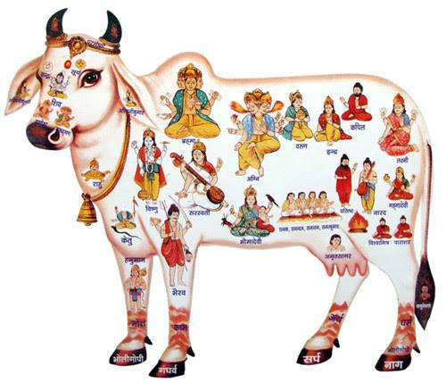

This website consistes of five Blog pages and is all about Ethical Life Hacks, here you can find different types of tips, tricks and solutions and many more Life Hacks which are verymuch usefull for the better and smooth happening of life and also will be as the solution sfor the day to day porblems of our lives.
Lets think about all the Gods in this good time. In this website one can find all the different Life Hacks, Easy solutions, ect are posted in the form of articles regularly by me.
The articles may be base on Technology, DIY-(Do It Yourself), Ethical LifeStyle, Nature, Ethical Attitude, etc and so on.
All these are definitely usefull for each and everyone in our lives like Students, School children, Teachers, Parents, Citizens, and all.
In conclusion it is my passion and also hobbie solve the problems and find some solution and mainly to share my knowledge and any skill also any good thing I know about anything and explain them those who are in need.